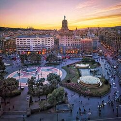

Places
Plaça de la Rosa dels Vents: La zona de l´accés a la Nova Bocana i la Plaça Rosa dels Vents del Port de Barcelona és un dels racons més màgics del litoral barceloní.
Plaça de la Barceloneta: La Barceloneta del set-cents creix sense pausa i aviat s’omple de veïns que demanden tot tipus de comerços al seu servei. Pel fet de ser un barri que es troba fora muralles aviat s’evidencià la importància de ser autosuficients en productes de primera necessitat.
Plaça de Catalunya: La plaça de Catalunya és la més cèntrica i gran de les places de Barcelona. Constitueix el punt d'unió entre el nucli antic de la ciutat i l'Eixample.
Plaça Gaudí: La plaça de Gaudí és una plaça enjardinada del districte de l'Eixample de Barcelona, Espanya, situada davant de la façana del Naixement del Temple Expiatori de la Sagrada Família.
Imatge
